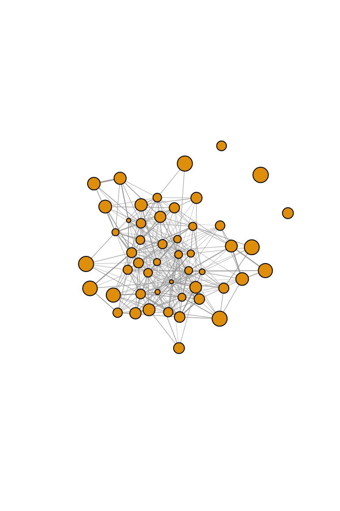
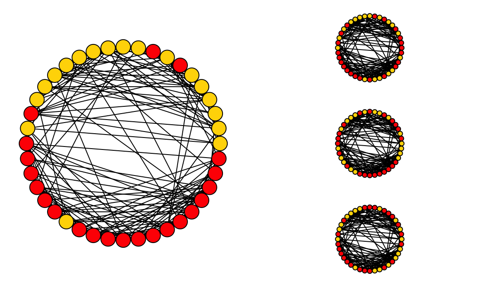

Packages you’ll need:
library(asnipe)
library(igraph)Thus far, we have learned how to measure empirical networks in a variety of ways. However, we are often not satisfied with simply constructing and measuring networks. What we really want to know is: does our empirical network show some patterns that deviates from a random process?
This brings us to hypothesis testing–that is, we want to compare the properties of our networks against some baseline, i.e., a null hypothesis/model. That is, we can ask the question: is our network non-random?
The problem with this simplistic question, however, is that no real network is ever random. There are a multitude of factors that make networks deviate from an idealized Erdös-Renyí random graph (see [7. Random Graphs)(07_randomnets.html))
Because most networks are complex and relational data do not conform to the requirement of non-independence of data, we often use randomizations/permutations to generate null models against which we can compare the empirical data. Here, we focus narrowly on some classic forms of null model hypothesis testing using randomizations. In the context of animal social networks, there have been a couple of good review and tutorial of this method (Croft et al. 2011; Farine & Whitehead 2015). We will provide a quick overview here.
Node-label permutations involve shuffling the node type or node values (e.g., sex, size, etc.) randomly across all nodes in a network, while keeping the edges the same. This ensures that the inherent structural pattern of the network remains the same, but the node values are randomized. This type of randomization scheme may be appropriate when you are interested in understanding how node attributes affect connectivity of nodes, e.g.:
Let’s re-create the flock simulation from section 8. In this simulation, we set up 50 individuals with variation in a trait as well as variation in gregariousness (probability of joining a given flock). Based on these parameters, we simulate observations of 100 flocks, then create a network.
set.seed(2)
n=50 #populatoin
trait=sort(rnorm(n,mean=20, sd=5), decreasing = T) #trait
p=sort(runif(n, min=0.01, max=0.1)) #gregariousness
f=100 #number of flock observations
#Now set up and construct simulated flock observations
ibg=matrix(0,nrow=n, ncol=f)
for(i in 1:n){
for (j in 1:f){
ibg[i,j]=sample(c(1,0), 1, prob=c(p[i], 1-p[i]))
}
}
#calculate association index (simple ratio index) from this individual-by-group matrix.
adj=get_network(t(ibg), data_format="GBI", association_index="SRI")## Generating 50 x 50 matrix#create and plot network, with vertex size proportional to trait value
g=graph_from_adjacency_matrix(adj, "undirected", weighted=T)
plot(g,vertex.size=trait/2, vertex.label="", edge.width=E(g)$weight*5)
We showed in this simulation that degree centrality is correlated to the trait:
plot(trait, degree(g), pch=19)
cor.test(trait, degree(g))##
## Pearson's product-moment correlation
##
## data: trait and degree(g)
## t = -8.0451, df = 48, p-value = 1.883e-10
## alternative hypothesis: true correlation is not equal to 0
## 95 percent confidence interval:
## -0.8556276 -0.6075387
## sample estimates:
## cor
## -0.7577462